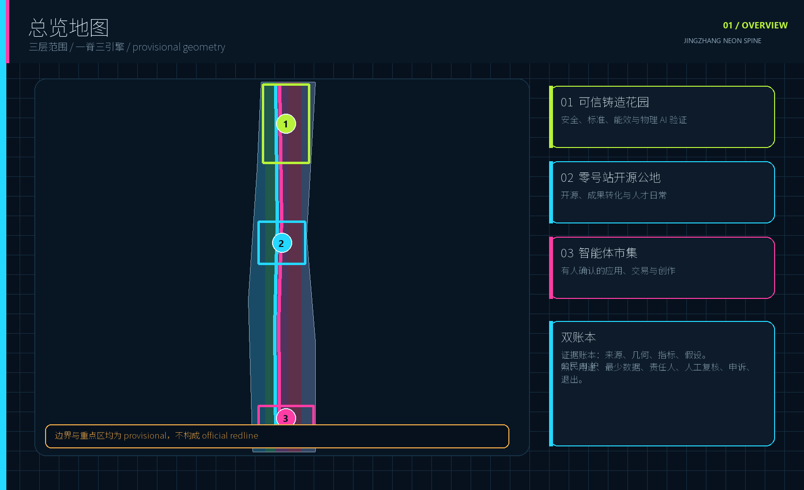
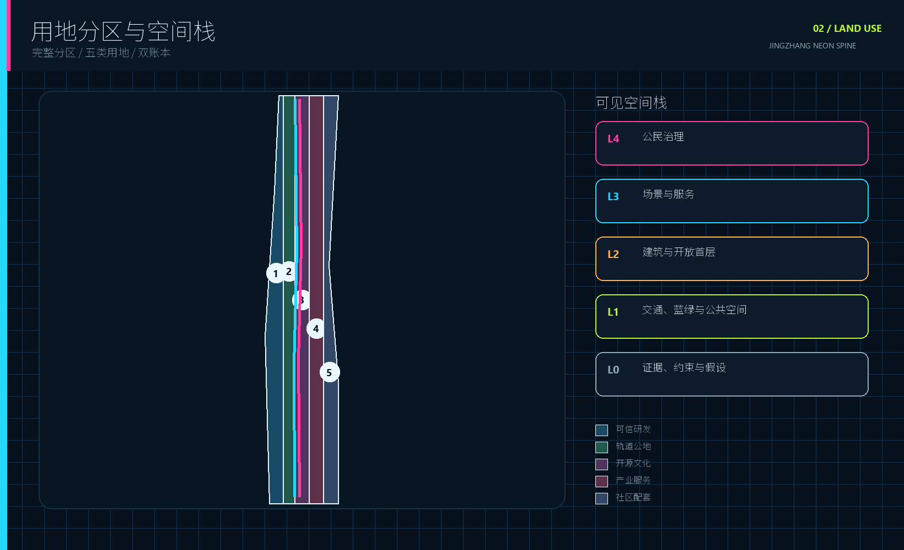
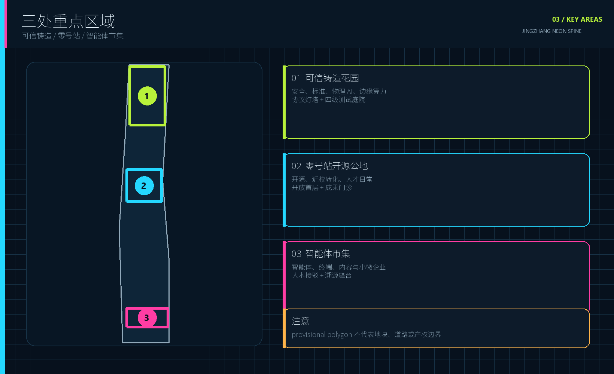
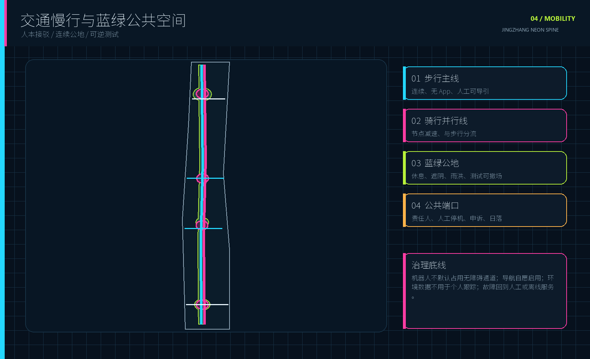
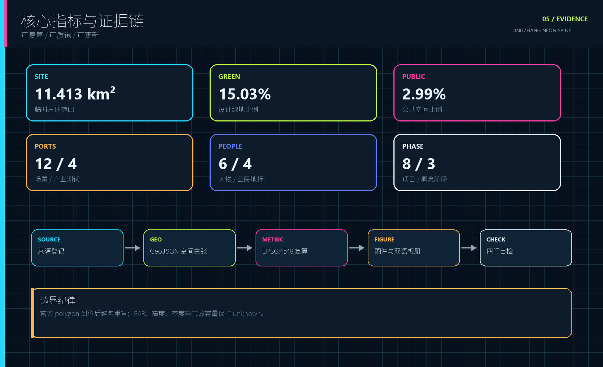

百年京张·霓光脊：可见、可问、可停的公民 AI 创新带
把百年京张从交通遗产转化为一条城市公共协议，让每项 AI 的用途、数据、责任人、人工复核和退出机制在公共空间中可见。所有空间为基于 provisional geometry 的概念建议。
百年京张·霓光脊
可见、可问、可停。北部铸可信，中部育开源，南部展应用。
设计依据与资料清单
本方案以官方征集公告、面向智能体任务书和仓库场地包为任务依据。官方文本给出统筹研究、总体设计与三处重点区域的工作要求，但公开包尚未提供 official site boundary、official key-area polygons、控规、道路红线、权属、市政、文保与建筑普查。本包因此原样继承仓库的 provisional geometry，并把它标成 medium confidence、official_boundary=false 和 provisional_constraint。按 EPSG:4548 复算的当前提交边界约为 11.413 平方公里，只服务于可重复的方案比较，不构成红线、审批或精确地籍结论。来源
证据链分成五层：来源登记定义资料用途，GeoJSON 保存空间主张，metrics.json 复算可量化结果，assumptions.json 暴露缺口，self_check.json 保存四门自检。读者可以从图进入数据，而不必相信一张气氛图。正式深化时，官方 polygon 到位后必须同步重算用地、道路、蓝绿、公共空间、建筑、分期与全部图件，不能只替换面积数字。来源 空间数据

本次国际案例只提炼运行机制，不复制形态、指标或治理权限。图片生成资产只作为非证据性封面，五张核心图均由提交 GeoJSON 与 metrics.json 本地生成。完整来源、检索日期、发布者与用途限制见 sources.json，版权和工具说明见 report/copyright_statement.md。来源
三层范围工作框架
总体结构为一脊、三引擎、两翼、十二端口、双账本。一脊是百年轨道公地，把京张遗产、连续慢行、蓝绿空间与 AI 公共体验组织成南北共同骨架。三引擎对应众智园可信铸造花园、北京 AI 原点社区零号站开源公地、大钟寺智能体市集。两翼分别承接中关村科技服务与小月河真实城市场景。十二端口采用可识别、可管理、可停用的试点入口，避免形成满城传感器。深度
统筹研究层面以公告约 43.6 平方公里为产业与未来城市讨论范围，不生成伪精确 polygon；总体设计层面使用仓库约 11.4 平方公里 provisional boundary 组织用地与更新框架；重点区域层面使用三处 provisional polygons 表达详细设计问题。双账本贯穿三层：证据账本记录来源、几何、指标和假设；公民 AI 护照为每个场景公开用途、最少数据、运营者、人工复核、申诉方式、非数字替代与日落条款。来源

霓光在这里是公共可见性的状态码，实体广告照明不属于设计目标。青色标识开放路径与数据来源，洋红标识需要公众确认的场景，酸绿标识通过验证的蓝绿或安全状态。任何实体灯光仍需低眩光、分时、能耗、生态与文保复核。这个视觉系统让赛博朋克气质承担可读性，不遮蔽空间证据。[assumption:A-LIGHT-001]
统筹研究范围产业与未来城市研究
产业生态按五步运行：研究开源、验证转化、城市采用、公众评议、对外传播。高校与研究机构不只提供人才，也承担可复现研究和模型卡；众智园提供安全、算力与物理 AI 验证；原点社区提供开源协作、创业服务和人才生活；大钟寺让智能体、终端与内容服务在真实消费环境中接受选择；独立评议席贯穿每一步。品牌中文名为百年京张·霓光脊，英文名为 JINGZHANG NEON SPINE。标识由两条轨道括号夹住一条可中断信号线，表达连接、人工停用与重新协商。标准
| 案例 | 可转化机制 | 京张转译 | 证据 |
|---|---|---|---|
| 新加坡榜鹅数码园区 | 教育、产业、社区共址，开放数字平台支撑试验 | 共享但分级授权的测试端口，先仿真、后封闭测试、再公共试点 | 来源 |
| 赫尔辛基智慧城市 | 敏捷试点、居民共创、真实环境评价 | 每个试点设基线、停止条件与公开复盘 | 来源 |
| 伦敦国王十字 | 铁路工业遗产、大学锚点与公共空间共同激活 | 让京张历史成为学习、交往与开放创新的社会基础设施 | 来源 |
| 巴黎 STATION F | 历史建筑内的多计划创业平台与共享支持 | 原点社区采用多计划共平台，降低团队寻找空间与服务的成本 | 来源 |
| 蒙特利尔 Mila | 开放科学、人才、产业转化与负责任 AI 相连 | 众智园建立研究、治理、转化三角 | 来源 |
| 多伦多滨水区数字评议 | 独立审议、隐私优先和民主问责 | 公民 AI 评议席与公开测试登记簿独立于供应商 | 来源 |
| 阿姆斯特丹 Marineterrein | 公共可达、专业管理的户外 Living Lab | 小月河翼设置真实但有边界的水陆测试，并规定时段与撤场 | 来源 |
七个案例说明：创新城区既需要研究与企业密度，也需要测试方法、公共空间、历史再利用和独立数字治理。方案尤其吸收敏捷试点的停止条件、Waterfront Toronto 的独立评议、Marineterrein 的边界化实测；不把平台规模、楼宇数量或投资额移植为京张指标。结合当前公开数据缺口，产业空间只给功能与运行关系，不给就业、产值、资本或人才密度的承诺。来源
未来城市形态的判断标准很直接：能否被日常使用和质询。一项 AI 服务只有同时具备可见责任人、人工检查点、申诉、退出和适用的非数字通道，才进入公共端口。长期运营采用年度京张可见智能周、季度霓光夜班开放测试、月度城市补丁日和常设公开测试登记簿，让项目从一次性展示转为持续维护。指标
总体设计范围城市更新与控规深度城市设计
总体设计以保留利用和可逆更新优先。五类用地从西向东形成可信研发、轨道公园、开源文化、产业服务、社区配套的完整分区，拓扑上无缝覆盖当前 provisional boundary。5 个用地 polygon 是设计结构，不是法定用地调整；分类使用场地包提供的国土空间用途代码。南北慢行双线与三条东西连接将三处重点区域接入公共骨架，概念道路均位于提交边界内。空间数据
建筑图层设置 12 个概念载体，用于验证功能、街道界面与项目组织。retain_and_adapt 表示优先保留后适配，renovate 表示待普查后改造，new_concept 只表达所需空间原型。由于缺少现状建筑、权属、消防、文保与控规，容积率、建筑高度、建筑密度、退线和建筑规模均保持 unknown；方案不以虚构体量制造完成度。指标
空间操作系统采用四道测试门：仿真门核对问题与数据，封闭门核对安全和故障降级，公共门核对无障碍、投诉与人工接管，扩展门依据公开评价决定续期或日落。对应的实体环境采用可撤除测试庭院、开放首层、共享工坊、公共评议席和人工服务窗口，不预设永久高科技装置。道路红线、停车、市政与承载力必须在专业资料到位后复核。空间数据
八项更新项目和三期空间在 phasing.geojson 中交叉验证。近期优先做治理、资料核验与可撤除原型，中期连接公共空间和片区服务，长期只扩展通过评价的场景。城市更新先交付一套能拒绝不合格技术进入公共空间的共同规则，新建面积不作为首个成果。深度
重点区域详细设计
三处重点区域拥有不同的创新任务，不能用同一套园区语言复制。众智园是可信铸造花园，聚焦全栈自主、模型安全、标准治理、物理 AI 与边缘算力；空间上用研究内院、可控测试庭院、协议灯塔和清河绿色界面形成从封闭验证到公共展示的梯度。原点社区是零号站开源公地，聚焦近校成果转化、开放源码、人才学习生活和低扰动微更新；空间上以开放首层、共享工坊、发布厅和慢行连桥缝合校区、园区与社区。大钟寺是智能体市集，聚焦智能体、终端、内容、创作者与小微企业；空间上以四象限人本接驳、可变市集、溯源舞台和人工确认点把技术带入真实交易。空间数据

三片区共同执行公民 AI 护照，但验证重点不同：众智园看安全、接管、能效和标准；原点社区看复现、许可证、人才服务与邻里影响；大钟寺看消费者选择、支付确认、版权、申诉和小微参与。每个区域至少有一个不依赖 App 的入口和一个由人负责的停止点，避免把城市公共服务等同于智能手机界面。深度
当前重点区矩形只来自仓库 provisional source，不代表地块、道路或产权边界。地标、建筑载体、连接线与功能表都是概念建议；准确选址、拆改留、开发强度、轨道接口、文保关系和实施主体要在 official polygon、测绘、权属与专业条件到位后联合校准。[assumption:A-BOUNDARY-001]
AI 创新生态、人才画像与 AI+ 场景
六类人物用于场景准入测试，不用于营销分群。每个场景要回答谁受益、谁可能被排除、数据最少到什么程度、谁能停机、失败后如何获得人工服务。运营者、维护人员和独立评议者另作为治理角色，不挤占用户画像。可达性测试邀请轮椅或低视力通勤者参与，数字包容测试邀请非智能机居民参与，版权与交易测试邀请小微商户和独立创作者参与。指标
| 人物 | 核心需求 | 空间与服务响应 |
|---|---|---|
| 开源研究者 | 复现、发布、跨学科协作 | 开放工坊、模型卡和贡献轨 |
| AI 创业者与产业工程师 | 低成本、合规的真实测试路径 | 四级测试门与专业复核 |
| 本地老年及非智能机居民 | 人工、纸质服务始终可用 | 无 App 等价通道与人工窗口 |
| 轮椅或低视力通勤者 | 无障碍成为准入条件 | 共行导航、触觉导视和障碍复盘 |
| 小微商户与独立创作者 | 可控助手、清晰版权和低门槛展示 | 智能体市集与溯源舞台 |
| 国际青年开发者与访客 | 双语导航、短周期加入和贡献路径 | 零号站、开放测试周与贡献账本 |
十二端口中 T1-T4 为产业测试验证场景，S5-S12 为城市服务、文化与公共生活场景。每张卡统一记录公共问题、服务对象、位置、AI 角色、最少数据、人工复核/非数字替代、评价与日落条件。来源
| ID | 场景 | 位置 | 关键验证边界 |
|---|---|---|---|
| T1 | 多机共行试验街 | 众智园/小月河翼 | 不默认启用人脸识别；实体急停、现场安全员；测让行、接管与近失 |
| T2 | 模型可信公开测场 | 众智园 | 仅用公开、清权或合成数据；红队结果与修复状态公开；高风险决定由人作出 |
| T3 | 边缘算力能效试验舱 | 众智园 | 只采设备与能耗数据；专业电气复核；测单位任务能耗、延迟与稳定性 |
| T4 | 多智能体城市仿真室 | AI 原点社区 | 先用合成或公开数据仿真；记录异议与人工选择；模型输出不是规划结论 |
| S5 | 开源成果门诊 | AI 原点社区 | 许可证与知识产权人工核验；输出可复用代码、模型卡和试点建议 |
| S6 | 无障碍共行导航 | 轨道节点/遗址公园 | 自愿启用、最小留存；同步提供触觉、纸质与人工路径 |
| S7 | 百年记忆代理 | 京张遗址公园 | 仅用清权史料；生成内容标识、逐条溯源并经专业复核 |
| S8 | 小月河气候舒适路 | 小月河翼 | 使用非个人环境数据；给出遮阴与休息建议，不跟踪个人移动 |
| S9 | 城市服务副驾驶 | 社区服务节点 | 回答链接官方来源；保留纸质流程和人工窗口；不替代行政决定 |
| S10 | 大钟寺智能体市集 | 大钟寺 | 商户控制权限；支付、合同和发布必须由人确认 |
| S11 | 创作者溯源舞台 | 大钟寺 | 展示许可、作者、AI 生成方式与编辑责任；提供申诉和下架路径 |
| S12 | 夜光信号公园 | 霓光脊公共空间 | 低眩光、分时运行、非身份化客流；人工巡护优先 |
四项测试必须先发布方法、事件记录、修复状态和停止条件，再讨论扩展。技术指标只回答系统是否工作，公众评价还要回答无障碍、投诉、接管、数字排斥、能源与维护成本。公民 AI 护照由场景运营者维护，独立评议席审查高风险变更，现场责任人拥有即时停用权；行政、医疗、法律、支付等高风险结果始终由具备权限的人确认。[assumption:A-AI-001]
用地、建筑规模与拆改留方案
用地分区使用科研用地 0802、公园绿地 1401、文化用地 0803、商业服务业用地 05 和社区服务设施用地 0702 五类代码，形成从研究、公共公地、开源文化、产业服务到日常配套的横向梯度。分区覆盖当前提交边界且不重叠，面积在 EPSG:4548 下逐 feature 声明；它们是概念性城市设计分区，后续必须与 official land-use plan 和权属核对。标准
建筑策略先分类再定量。保留适配类优先利用既有空间承载孵化、人才与企业服务；改造类用于开放首层、测试工坊、文化展示与市集；新概念类仅提示边缘算力试验舱所需的安全、能源和设备边界。提交图层的建筑基底合计约 16.59 公顷，但它不是现状普查或审定建筑量。FAR 与高度仍为 unknown，任何拆除决定也未形成。空间数据
拆改留核验顺序为：测绘与结构安全、产权和租赁、文保与工业遗产价值、消防和无障碍、运营需求、全生命周期碳，再讨论保留、修缮、改造或新建。所有概念载体优先允许小尺度、可逆和共享使用；若专业核验发现文保、消防、市政或权属冲突，方案功能应迁移而不是强行保留图面位置。深度
建筑风貌采用深色金属、再利用砖混、透明工坊界面与可更换状态条的组合，但物理霓虹不是强制材料。屋顶、体量和夜景照明以低眩光、可维护、分时和邻里低扰动为原则。准确材质、构造、荷载、节能和高度控制须由专业团队在后续阶段深化。[assumption:A-BUILDING-001]
交通、轨道、市政与公共服务设施
交通结构以两条南北连续线和四条东西支线构成。步行主线沿百年轨道公地串联三处重点区，骑行线保持并行但在公共节点减速，东西支线分别服务大钟寺接驳、原点社区开放首层、众智园测试庭院和小月河气候舒适路线。当前设计中心线总长约 23.12 公里，仅作为连通策略；道路红线、交叉口、站点接口、停车与消防通道需要正式交通资料。空间数据

轨道一体化坚持人先于智能体。机器人和自动配送只能在标识清楚的测试端口运行，默认不占用无障碍通道；大钟寺四象限联系先解决步行连续和人工导引，再叠加导航服务。无障碍共行导航自愿启用，提供触觉、纸质与人工路径，不以手机或视觉识别作为唯一入口。深度
新型基础设施采用小型、分布式和可隔离原则。边缘算力舱只处理明确授权的试验数据，能源沙盒记录设备级能耗而非个人行为；故障时切回人工流程或离线服务。供配电、通信、排水、防洪、消防、环卫、冷却与算力容量尚无官方工程资料，因此本方案只提出节点类型和治理门槛，不给管线、容量或服务半径的伪精确值。深度
蓝绿空间、公共空间与城市风貌
百年轨道公地把线性遗产、雨洪绿地、步行骑行、开放测试和日常休息叠合为连续公共骨架。设计绿地占当前 provisional boundary 的约 15.03%，公共空间约 2.99%；两者由独立图层复算，允许功能重叠但指标分别统计。绿地不是技术展示的背景，必须保留无消费休息、遮阴、运动和安静时段；测试活动采用预约、分区和撤场规则。指标
四个 AI 朝圣地标是公共机制，不预设高层地标建筑。众智园的协议灯塔展示测试状态、责任人、事故与整改；原点社区的零号站承载开源发布、研究转化和京张档案；大钟寺的智能体市集穹廊提供有人确认的体验与交易界面；沿线百年贡献轨经授权记录工程师、研究者、维护者和市民贡献。所有准确位置、文保关系、姓名与图像授权待核验。指标
城市风貌把铁路信号、程序状态和公共账本转译为导视。青色表示开放连接，洋红表示需要确认，酸绿表示通过验证，琥珀表示待修复；颜色始终配合文字、编号和图形，避免色觉依赖。夜光信号公园采用低眩光、分时运行和非身份化客流计数，优先人工巡护，不以监控强度塑造安全感。标准
文化叙事从工程师个人英雄扩展到可见的集体维护。百年京张的工程精神被转化为一套城市方法：公开问题、验证方案、记录失败、修复系统。年度活动通过看见、试用、质询、贡献、试点、维护、向外复制七步形成参与路径，让游客体验与本地居民日常利益保持同一条公共逻辑。空间数据
更新项目清单、实施政策与分期计划
实施先建立规则和责任，再增加永久建设。八个项目覆盖慢行、治理、产业验证、开源微更新、蓝绿、轨道接驳、智能体产业与文化运营。每个项目都写明专业依赖，不把缺少权属、资金、审批或运营主体的内容表述为已确定工程。指标
| 编号 | 项目 | 类型 | 阶段 | 前置条件 |
|---|---|---|---|---|
| JZ-01 | 百年轨道公地断点缝合 | 公共空间/慢行 | 一期 | 道路红线与桥下空间核验 |
| JZ-02 | 协议灯塔与公开测试登记簿 | 治理/展示 | 一期 | 运营主体、安全与公众评议机制 |
| JZ-03 | 众智园四级测试庭院 | 产业验证 | 一期 | 专业安全、能源与数据审查 |
| JZ-04 | 零号站开放首层网络 | 微更新/开源 | 二期 | 权属、文保和消防核验 |
| JZ-05 | 小月河气候舒适支线 | 蓝绿/慢行 | 二期 | 河道、防洪与生态条件 |
| JZ-06 | 大钟寺四象限人本接驳 | 轨道一体化 | 二期 | 站点、道路和市政条件 |
| JZ-07 | 智能体市集与溯源舞台 | 产业/文化 | 三期 | 商业运营、版权与无障碍 |
| JZ-08 | 百年贡献轨与可见智能周 | 文化/长期运营 | 三期 | 姓名授权、活动许可与维护资金 |
一期核验并点亮建议 0-12 个月建立资料基线、公民 AI 公约、双账本、独立评议机制与四项可撤除测试。二期连接并转化建议 1-3 年，在专业核验和审批前提下连接慢行/公共空间网络，更新三区首层与服务。三期扩展并共治建议 3-5 年，只把通过公开评价的场景扩展为长期服务，并深化四个公共地标。这些时段是概念性实施顺序，不是政府计划或建设承诺。空间数据
政策工具包括开放场景登记、试点日落条款、非数字服务等价、公共投诉与事故公开、开放接口和可迁移数据格式、轻量空间租用、跨机构测试许可、维护预算先行。运营节奏为年度可见智能周、季度霓光夜班开放测试、月度城市补丁日和常设登记簿。每次活动必须记录责任人、参与门槛、事件、维修与下一次是否继续。深度
指标体系、面积复算与合规矩阵
指标分为三类。第一类可由提交几何直接复算，包括 site_area_sqm、building_footprint_area_sqm、green_ratio、public_space_ratio 和 road_network_length_m。第二类是内容计数，包括 12 场景、4 项产业测试、6 类人物、4 个地标、8 个项目和 3 个阶段。第三类必须保持 unknown，包括 FAR、建筑高度、建筑密度、退线、市政容量、就业和产值，因为公开包没有相应权威数据。深度

当前几何复算结果为：总体提交边界 11.413 平方公里，概念建筑基底 16.59 公顷，绿地比例 15.03%，公共空间比例 2.99%，设计中心线 23.12 公里。所有数字来自 EPSG:4548，并在 metrics.json 中保存公式、来源文件、置信度和假设；官方边界到位后必须整包重算。指标
合规矩阵逐条覆盖官方 1.3、1.4、1.5 和 agent.1-agent.6，标准矩阵说明强制、指导和项目特定依据，设计深度矩阵连接现状、空间、用地、建筑、交通、市政、蓝绿、重点区、项目、分期、指标与风险。四门自检依次核对 deterministic local validation、spatial review、visual packaging 和 professional evidence；任何文件变更都要刷新 manifest hash 并重跑。标准
风险、版权与合规说明
首要风险是智能系统滑向默认监控。控制措施为禁止默认生物识别、数据最小化、边缘处理优先、公开责任人、人工停机、申诉和日落。第二类风险是技术永久化，控制措施是四门验证与未评价不续期。第三类是数字排斥，控制措施是无 App、纸质、人工和无障碍等价通道。第四类是供应商锁定，控制措施是开放接口、可迁移格式和不指定必要供应商。[assumption:A-AI-001]
空间风险包括 provisional boundary、缺控规、缺建筑普查、缺道路和市政资料、文保与光环境冲突。所有几何均为概念建议；FAR、高度、密度、拆改留、道路红线、设施容量与准确地标位置不作审定结论。若官方资料与当前图面冲突，应以官方资料和专业核验为准，并重新生成全部衍生指标和图件。空间数据
五张核心图由本包 GeoJSON 与 JSON 使用 Pillow 本地生成，四份 PDF 使用 ReportLab 生成，HTML 不加载远程脚本、瓦片、字体、iframe、表单或 API，也不跟踪评审者。赛博朋克封面由 OpenAI 内置图像生成工具创建，未使用外部参考图，明确标记为 illustrative only，不参与面积、边界或空间证据。字体仅在本地渲染阶段使用，不以独立字体文件再发布。来源
本包提供完整中英文 Markdown、报告 HTML、可视化 HTML、A3 文册、A0 展板和五组文字图件。方案不声称官方批准、确定实施主体、确定资金、最终土地权属、法定控规或保证建设；所有公共 AI 场景都必须接受法律、伦理、安全、无障碍、专业与公众复核。来源
参考资料
官方任务入口包括北京市规划和自然资源委员会海淀分局征集公告、仓库 site package、agent taskbook、标准索引、来源登记与 provisional boundary。公告用于任务与范围文字，site package 用于枚举、工作边界和验证规则，provisional geometry 只用于可重复的空间草案。若来源登记将材料标为 background_only 或 provisional_only，本方案不将其升级为官方控制。来源
全球机制参考包括 JTC Punggol Digital District、Forum Virium Helsinki、King's Cross、STATION F、Mila、Waterfront Toronto Digital Strategy Advisory Panel 和 Marineterrein Living Lab。每条记录在 sources.json 中包含发布者、URL、检索日期、用途和限制；方案只借鉴共址、敏捷试点、遗产再利用、开放科学、独立评议与有边界实测等机制，不移植其数值、形态或行政权限。来源
机器可读完整索引位于 sources.json、metrics.json、assumptions.json、compliance_matrix.json、standard_matrix.json、design_depth_matrix.json 和 self_check.json。空间主张位于 geometry 目录，五张核心图位于 assets/figures，A3/A0 位于 drawings，离线审阅入口位于 visual/index.html。版权、生成工具和可选封面提示位于 report/copyright_statement.md。来源